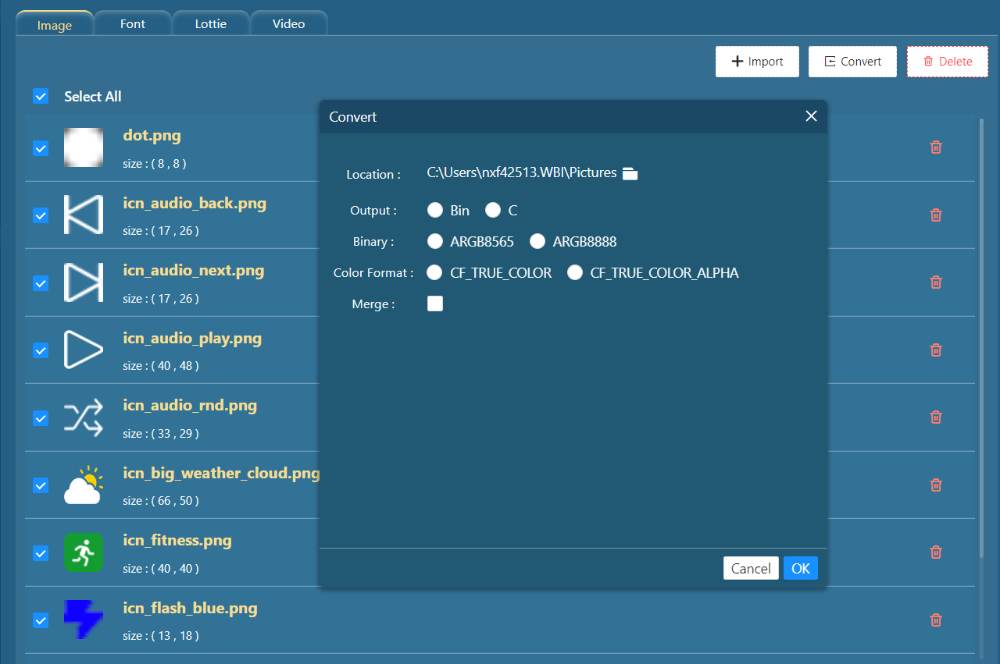

In the resource manager window, you can use the Convert button to convert images to bin or C array files.Figure: Resource manager window

Convert images window
Item name
Description
Location
Select the export file path
Output
Select the output file type
Binary
Select the binary format type
Color format
Choose the color format
Merge
If the output is a bin, you can merge it into one file
If the output is bin, you get two files: mergeBinFile.bin, mergeBinFile.c. The C file defines the size and address of the bin file corresponding to each image.Figure: mergeBin file